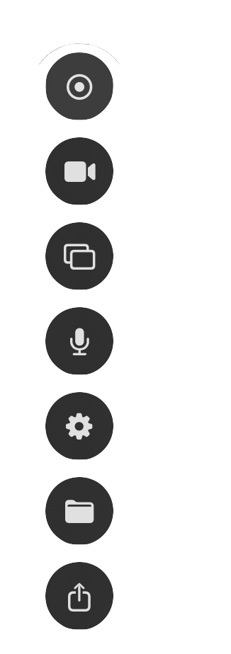

Private Screen & Face Recording
No account, no subscription, no cloud storage. Your recordings stay on your device.
Free for limited time — no subscription. Works offline.
ooml.io - Recording...
No account, no subscription, no cloud storage. Your recordings stay on your device.
Free for limited time — no subscription. Works offline.
Faster, more private — without the platform.
No logins, subscriptions, or cloud uploads. Your recordings stay yours.
Nothing leaves your Mac unless you share it.
Perfect for classrooms, NDAs, and travel.
No subscriptions. No expiration.
Fast access, minimal UI, and zero friction. Everything you need lives where it belongs.

Everything in one place
Start recording, toggle your camera, switch screens, adjust audio, and save or share — all from a single control panel.
Built with macOS Liquid Glass, the control panel can be moved from its fixed position anywhere on your Mac. No menus to dig through. No setup screens. Just clear, intentional controls that stay out of your way while you work.
Designed to feel native to macOS, the controls are smooth, responsive, and always within reach when you need them.
Powerful features, simple interface. Record your screen and camera in one click.
Capture your full screen, specific windows, or custom regions. Switch between sources instantly.
Record your microphone, system audio, or both.
Add your face with a floating camera bubble. Choose from circle, rounded, or square styles.
Change background and effects, lighting using macOS built-in portrait mode, custom background, studio mode, and more.
Record lessons without exposing student data.
Send demos and revisions without a platform watermark.
Record bug reports, workflows, and documentation locally.
Capture content privately before publishing.
Record lessons without exposing student data.
Send demos and revisions without a platform watermark.
Record bug reports, workflows, and documentation locally.
Capture content privately before publishing.
"Every screen recorder wants your data, your login, your subscription — we wanted one that just… records."
Get ooml.io free while we're in early access. No credit card required.